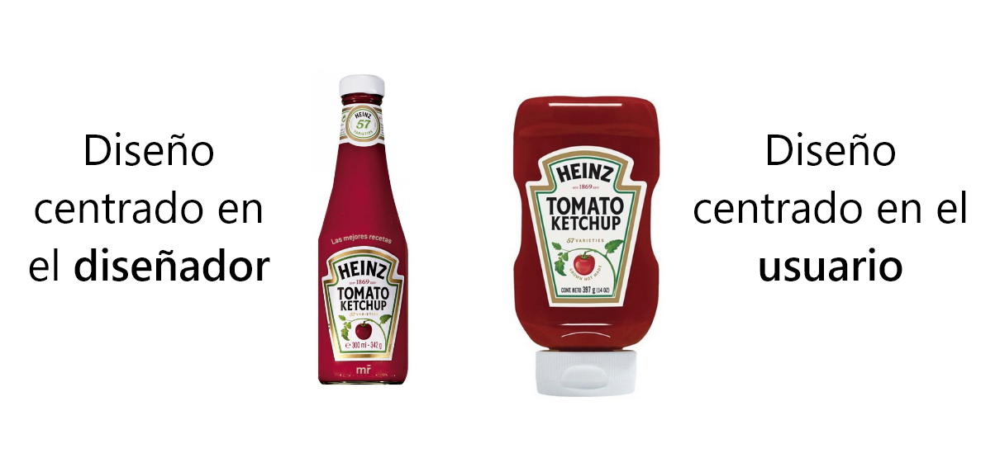
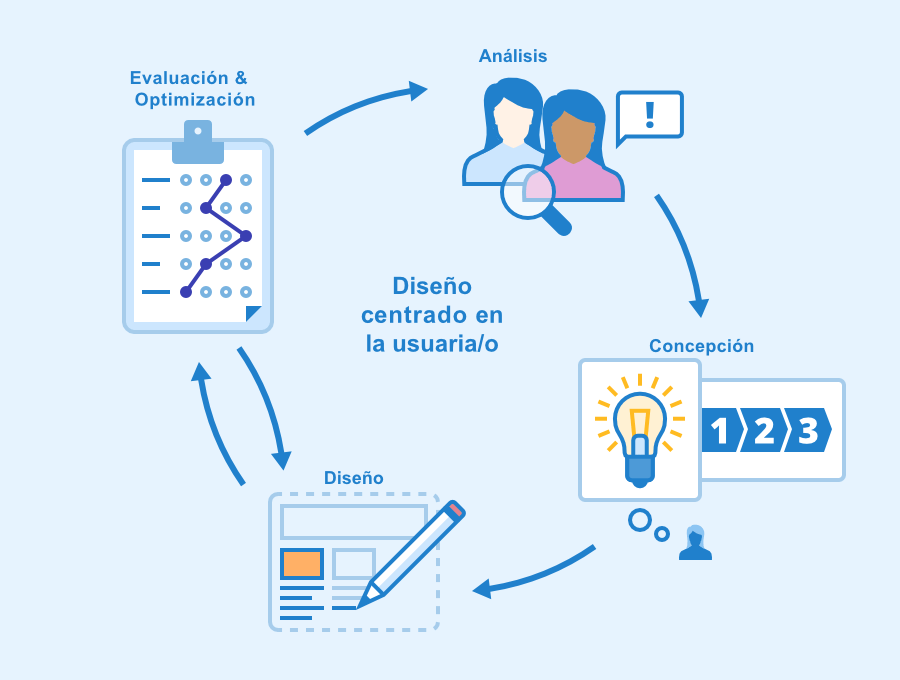

Diseño Centrado en el Usuario (DCU)
El Diseño Centrado en el Usuario (DCU) es una metodología de diseño que pone a las personas en el centro del proceso de creación de productos digitales. Su objetivo principal es garantizar que los sistemas, aplicaciones y sitios web sean útiles, fáciles de usar y satisfactorios para los usuarios.
¿Qué es el Diseño Centrado en el Usuario?
El DCU se basa en comprender profundamente a los usuarios: quiénes son, qué necesitan, cómo piensan y en qué contexto utilizan un producto. A diferencia de otros enfoques, el DCU no se centra únicamente en la tecnología o en la estética, sino en la experiencia completa del usuario.

Principios del Diseño Centrado en el Usuario
El DCU se apoya en una serie de principios fundamentales que guían todo el proceso de diseño. Estos principios permiten crear productos más eficientes y accesibles.
- Enfoque en el usuario: las decisiones se toman con base en las necesidades reales.
- Participación del usuario: los usuarios forman parte del proceso de diseño.
- Iteración: el diseño se mejora constantemente mediante pruebas y retroalimentación.
- Usabilidad: el producto debe ser fácil de aprender y utilizar.
Etapas del Diseño Centrado en el Usuario
El proceso de DCU se desarrolla en varias etapas que permiten comprender, diseñar y evaluar soluciones centradas en las personas.
- Investigación: se analizan las necesidades, comportamientos y problemas de los usuarios.
- Diseño: se crean prototipos e ideas basadas en la investigación.
- Evaluación: se realizan pruebas de usabilidad con usuarios reales.
- Iteración: se ajusta el diseño según los resultados obtenidos.

Importancia del DCU en entornos educativos
En el contexto educativo, el DCU es fundamental para crear plataformas digitales que faciliten el aprendizaje, especialmente para alumnos de primer ingreso. Un buen diseño permite que los estudiantes encuentren información fácilmente, reduciendo la frustración y mejorando su experiencia académica.
Video explicativo
A continuación se muestra un video que explica de manera sencilla el Diseño Centrado en el Usuario: